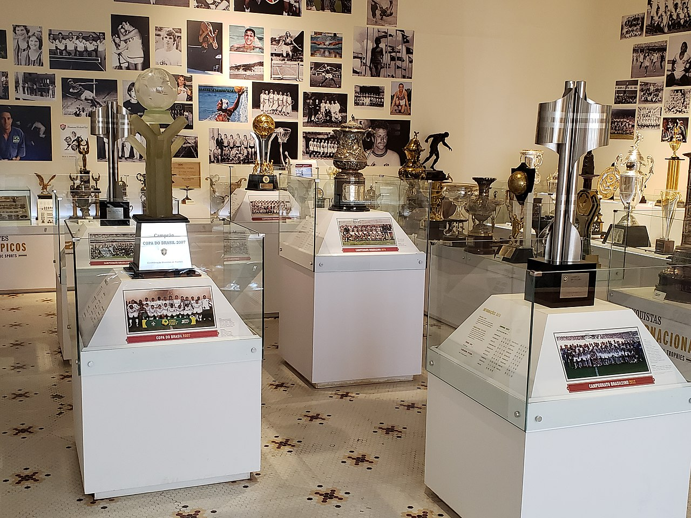

Fundado em 21 de julho de 1902, por Oscar Cox, jovem filho de um cidadão inglês vice-cônsul da Inglaterra no Equador, o Fluminense Football Club levava, à época, as cores cinza e branco. Cox é um dos grandes responsáveis pela chegada do futebol ao Brasil. Em diversas idas à “Terra da Rainha”, sempre trazia novidades, bolas, materiais esportivos. Também jogou, foi campeão Carioca de 1906, quando o Flu já era verde, branco e grená. Com problemas para adquirir o tecido cinza para o uniforme original, em 1904 foi aprovada a alteração, nascendo o Tricolor.
Pioneiro, o Fluminense construiu o primeiro estádio de cimento da América Latina, o Estádio de Laranjeiras, que foi sede do Campeonato Sul-Americano de Seleções, atual Copa América, e dos Jogos Olímpicos Latino-Americanos, atualmente Jogos Pan-Americanos, e foi palco do primeiro título relevante da Seleção Brasileira.
Considerada o Prêmio Nobel do Esporte, o Fluminense é o único clube da América Latina que detém a Taça Olímpica, em 1949, além de ser o único clube de futebol do mundo ter seu nome inscrito na honraria concedida pelo Comitê Olímpico Internacional por serviços prestados ao esporte.
Foi de Preguinho, um dos ídolos tricolores, o primeiro gol da Seleção Brasileira em Copas do Mundo. Desde Cox, muitos craques vestiram a camisa do Fluminense. Além de Preguinho, Pinheiro, Hércules, Escurinho, Waldo, Orlando Pingo de Ouro, Welfare, Ademir de Menezes, Rivellino, Altair, Jair Marinho, Gerson, Marcos Carneiro de Mendonça, Félix, Castilho, Carlos Alberto Torres, PC Caju, Pintinho, Branco, Didi, Ézio, Romerito, Assis, Washington, Renato Gaúcho, Tele Santana, Romário, Deco, Conca, entre outros, fizeram a alegria da torcida tricolor.
Campeão das Copa Libertadores da América, tetracampeão brasileiro, campeão da Copa do Brasil e da Copa da Primeira Liga, 33 vezes campeão Estadual e vice campeão da Sul-americana.
Além da sede de Laranjeiras e do Maracanã, onde manda seus jogos, o Fluminense possui dois Centros de Treinamentos. O de Xerém, em Duque de Caxias, é voltado para as divisões de base, e o da Barra da Tijuca, do Futebol Profissional.
O Fluminense deu muitas demonstrações de civismo em sua História, salientando-se que durante a Primeira Guerra Mundial o clube criou um batalhão que recrutou 83 reservistas apenas no primeiro momento, movimento de civismo que acabou seguido por outras entidades esportivas posteriormente
Além de sediar e patrocinar o Campeonato Sul-Americano de Futebol em 1919 e 1922, o Fluminense igualmente o fez na realização dos Jogos Olímpicos Latino-Americanos de 1922, competição precursora dos Jogos Pan-Americanos, sendo esses dois últimos os maiores eventos comemorativos do Centenário da Independência do Brasil, listados entre aqueles esforços patrióticos que chamam mais a atenção em seus primeiros 20 anos de atuação.
Nos Jogos Olímpicos de 1920, o atleta tricolor Afrânio Antônio da Costa conquistou a primeira medalha olímpica da história para o Brasil, ao receber a medalha de prata na competição de tiro, e também neste dia, Afrânio e o também atleta tricolor, Guilherme Paraense, fizeram parte da equipe brasileira que conquistou a medalha de bronze por equipes na modalidade tiro-livre-pistola ou revólver, tendo ainda nesta Olimpíada Guilherme Paraense conquistado a primeira medalha de ouro para o Brasil.
Já em outubro de 1937 o Fluminense formou uma Escola de Instrução Militar que durante os anos de 1940 e 1941 conquistou o primeiro lugar em eficiência e disciplina de todo o então Distrito Federal, tendo preparado um curso de enfermagem em 1942 para auxiliar os pracinhas da Força Expedicionária Brasileira que mais tarde desempenhariam um importante papel na Itália, formando 85 enfermeiras nesse período, além de doar um avião para a Força Aérea Brasileira, batizado de Coelho Netto.
Tem marcas importantes entre os seus principais jogadores, o goleiro Castilho, recordista de presenças, com 697 partidas em 18 anos de atuação entre os anos de 1947 e 1964, e que representou o clube em quatro edições da Copa do Mundo, entre 1950 e 1962, e Waldo, o maior artilheiro de sua História, com 319 gols em 403 jogos, a melhor média de gols por partida entre os maiores artilheiros dos grandes clubes do Rio de Janeiro.
Considerando as participações como jogador e como técnico, Pinheiro foi aquele que mais defendeu as cores do Fluminense, com 722 jogos, números que não incluem a sua relevante participação como técnico das categorias de base durante 9 anos,[41] e na relação de seus maiores artilheiros, o inglês Henry Welfare apresenta 161 gols em 165 jogos entre 1913 e 1924, uma média de quase um gol por partida.
A primeira partida do Campeonato Carioca foi disputada no dia 3 de maio de 1906 no Campo da rua Guanabara, no bairro de Laranjeiras, e o resultado foi Fluminense 7 a 1 Paissandu, com o primeiro gol da história sendo marcado pelo atacante tricolor Horácio da Costa.
Entre outras marcas de pioneirismo de seus jogadores, Oswaldo Gomes, recordista em conquistas do Campeonato Carioca, foi o primeiro jogador a marcar gol pela Seleção Brasileira, o multiatleta Preguinho com 55 títulos e 387 medalhas o primeiro brasileiro a marcar gol em uma Copa do Mundo,[43][44] Thiago Neves o primeiro a marcar três gols em um jogo final da Copa Libertadores da América, Didi, o primeiro a marcar gol no Maracanã, em 1950, e Fred, o primeiro a marcar gol no "Novo Maracanã", em 2013.
Outros jogadores notáveis seriam Assis, Rivellino, Telê, Romerito, Waldo, Conca, Washington, Didi, Carlos Alberto Torres, Gérson Canhotinha, Preguinho, Thiago Silva, Branco, Marcelo, Félix, Renato Gaúcho, Thiago Neves, Deco, Orlando Pingo de , Paulo Cézar Caju, Marcos de Mendonça, Altair, Ricardo Gomes, Paulo Victor, Diego Cavalieri, Marcão entre outros, fora o elenco de 2023 que conquistou a Copa Libertadores da América sobre o comando de Fernando Diniz.
A relação da torcida do Fluminense para com o Papa João Paulo II começou em 1980, quando o então pontífice - canonizado como santo em 2014 - visitou o Rio de Janeiro e recebeu uma camisa do clube das mãos de um garoto de 10 anos, passando a adotar essa música desde então, sendo ela um símbolo da conquista do Campeonato Carioca de 1980.
Desde então, a Torcida Tricolor entoa a música A Bênção, João de Deus durante as partidas, sobretudo durante momentos difíceis nos jogos. Na final do Campeonato Carioca de 2005, o gol do título saiu aos 47 minutos do segundo tempo, enquanto a torcida cantava essa canção. Em 2010 acabaria sendo nomeado padroeiro do clube carioca, ao lado de Nossa Senhora da Glória.
Em 2010, o ex-pontífice foi anunciado como padroeiro do Fluminense, ao lado de Nossa Senhora da Glória.